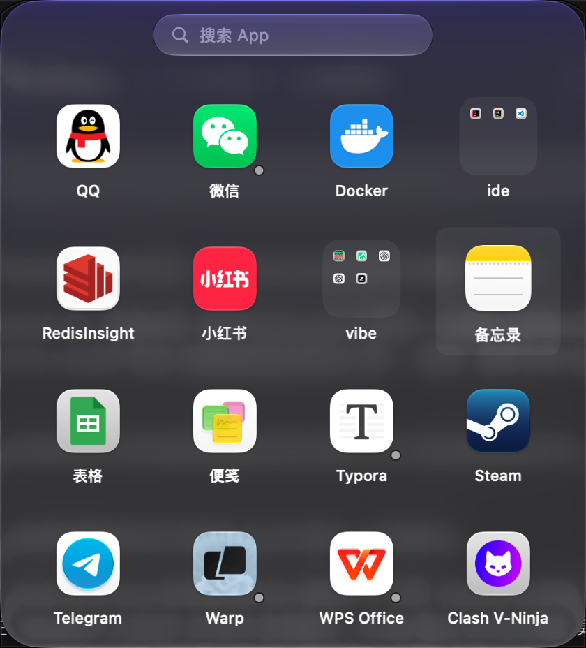
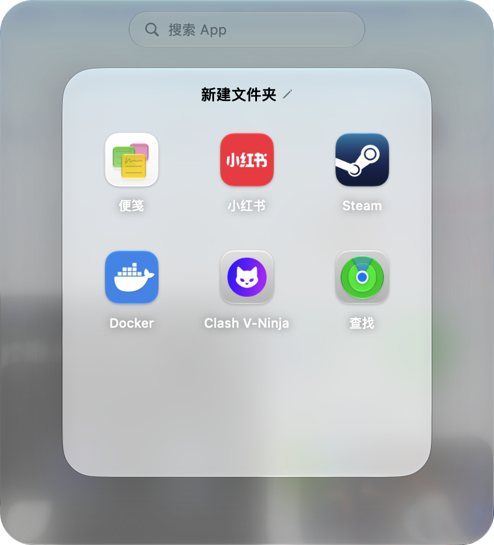
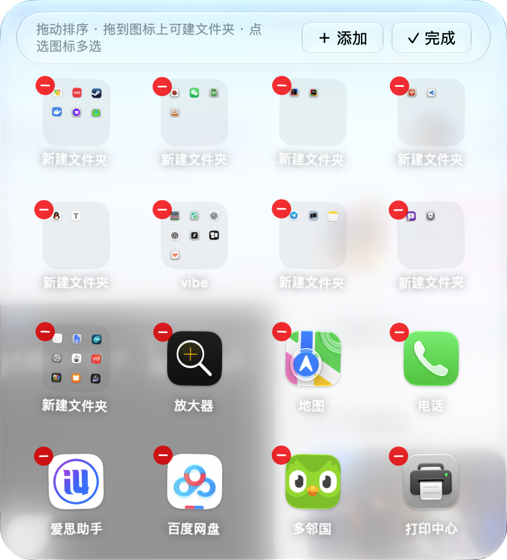
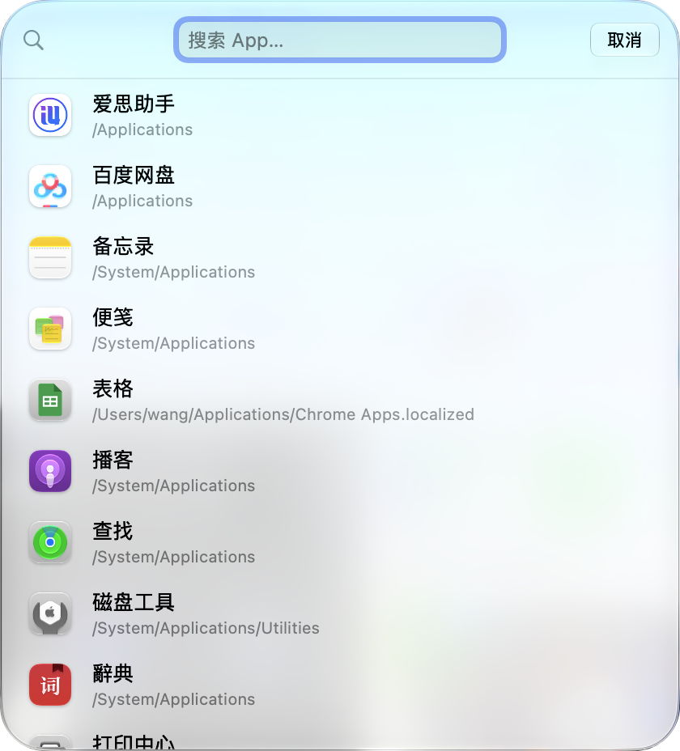
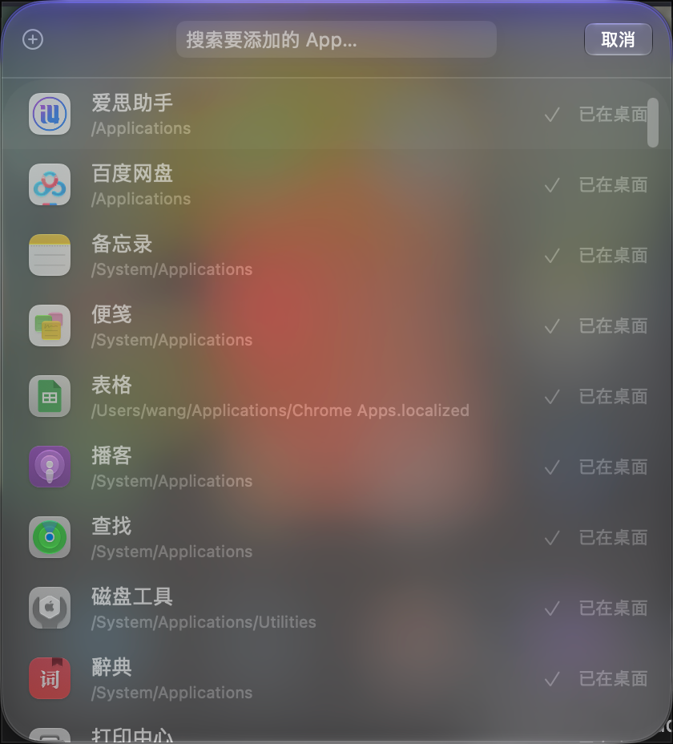
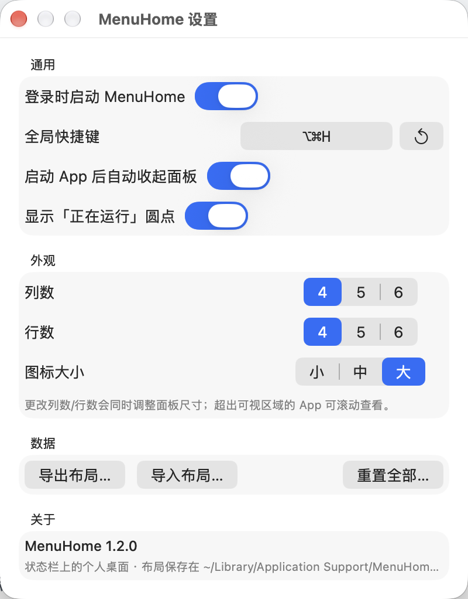

常驻状态栏 · macOS 26+ · 零第三方依赖
把你的 macOS 状态栏
把你的 macOS 状态栏
变成一块「个人桌面」
像 iPhone 桌面一样收纳常用 App：玻璃面板一键呼出，图标随手拖拽排序， 文件夹分类管理，键盘直搜全机应用 —— 不打断当前工作流。
全局热键 ⌥⌘H 随时呼出 / 收起

为「随手可达」而生
每一处细节都对齐 iOS 桌面的手感
🚀
状态栏即桌面
左键点状态栏迷你图标秒开液态玻璃面板；non-activating 设计不打断当前 App，点面板外自动收起。
🗂️
iOS 同款拖拽手感
随时拖动排序，不必先进整理模式：拖到占用格边缘出现「空位让位」插入预览，拖到中心悬停即合并。
📁
文件夹分类
拖到一起即建文件夹；点击从图标位置缩放展开居中卡片，行内重命名、卡片内拖动排序、超 3×3 卡片内滚动。
🔍
键盘直搜全机应用
面板打开时敲任意字符即进入搜索，列出全部本机 App（含未上桌面的），回车即启动。
🧹
整理模式
长按 0.5 秒 / 右键 / 拖动提起均可进入：图标抖动 + ⊖ 移除徽章，点选多选批量删除，✓ 完成即退。
🫧
液态玻璃美术
macOS 26 glassEffect 连续曲率圆角、玻璃栏下滚动折射、自绘同形阴影与 App 式胶囊滚轴，细节全对齐系统。
⌥⌘H 全局热键（可录制）
Finder 拖入 .app 即添加
运行中 App 圆点
列数 / 行数 / 图标大小可调
布局导入导出
JSON 持久化
界面一览
每一层都是真实的 App 截图





快捷键
手不离键盘
| ⌥⌘H | 呼出 / 收起面板（可在设置中录制） |
| 任意字符 / ⌘F | 打开搜索覆盖层 |
| Esc | 逐级回退：搜索 → 添加 App → 重命名 → 文件夹 → 整理模式 → 关面板 |
| ⌘, | 打开设置 |
快速开始
要求 macOS 26+ 与 Command Line Tools，无需完整 Xcode
# 克隆并构建（swiftc 直编 + ad-hoc 签名，约 1–2 分钟）
git clone https://github.com/a981008/menu-home.git
cd menu-home
bash scripts/build_app.sh && open build/MenuHome.app
# 打 DMG 分发包（可选）
bash scripts/make_dmg.sh
git clone https://github.com/a981008/menu-home.git
cd menu-home
bash scripts/build_app.sh && open build/MenuHome.app
# 打 DMG 分发包（可选）
bash scripts/make_dmg.sh
首次运行 ad-hoc 签名的 App 若被 Gatekeeper 拦截：
系统设置 → 隐私与安全性 → 点「仍要打开」放行即可